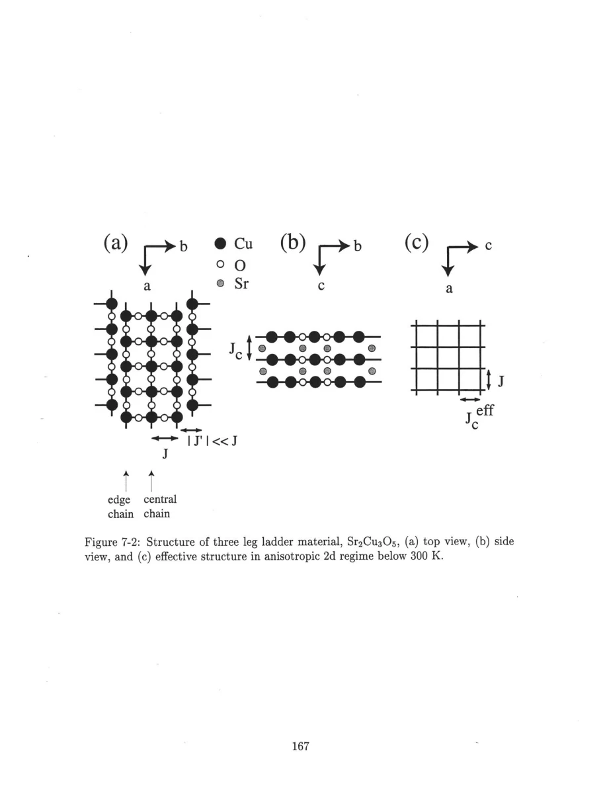
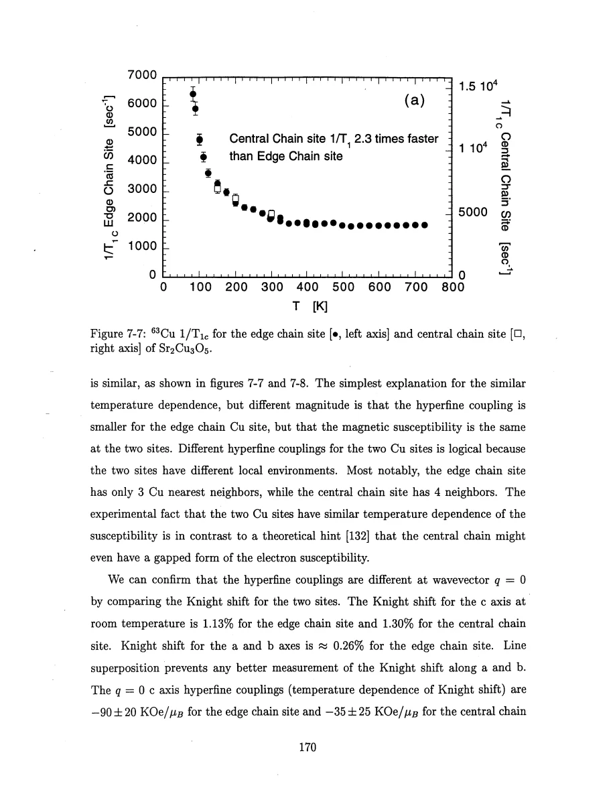
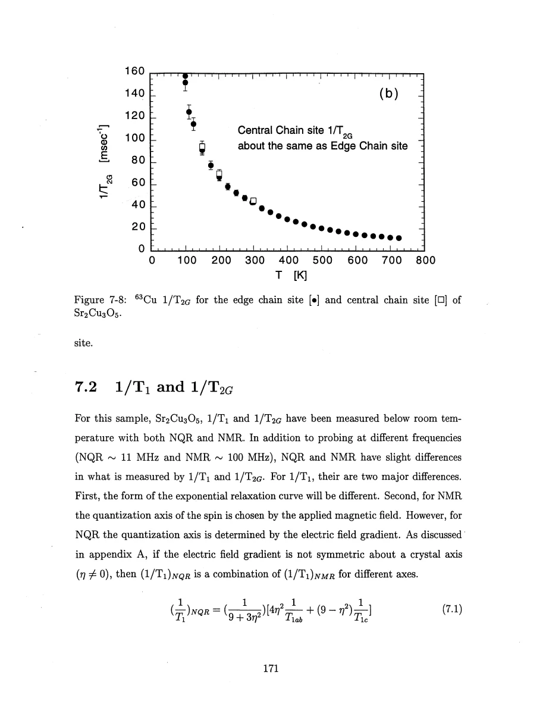
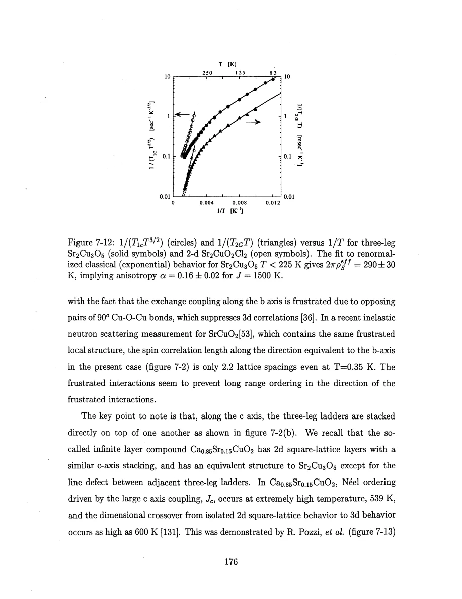
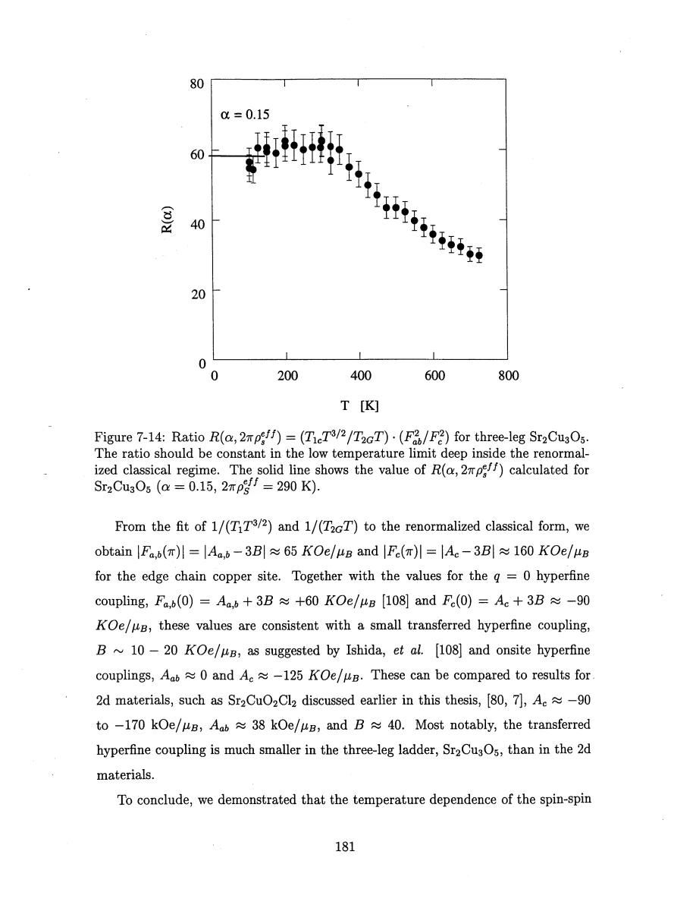

Thurber · supplied source 1999 · chapter unit
Three-leg ladders and the crossover to an anisotropic plane
Site-resolved rates and two independent scaling checks support a weak-coupling-driven dimensional crossover in the crystal.
The question: Why does a nominally gapless odd-leg material show stronger correlation growth than an isolated ladder predicts?
Before you start: the terms you need
- Spin-1/2 Heisenberg antiferromagnet: neighboring electron spins interact through J Sᵢ·Sⱼ with J>0.
- Hyperfine coupling: the electronic spin polarization produces a local magnetic field at a nucleus.
- Wave vector q: distinguishes uniform spin fluctuations near q=0 from staggered fluctuations near the antiferromagnetic vector Q.
- Correlation length ξ: a distance over which staggered electron-spin correlations remain appreciable.
- NMR/NQR: applied-field magnetic resonance versus resonance in the electric field gradient with no applied static field.
- Historical scope: these are experiments and interpretations reported in the supplied 1999 thesis, not a current review of quantum-spin transport.
See → explain → check
Follow the idea in 3 pictures.
Picture 1 / 3
Three legs leave distinct edge and central sites
Look for: Count three Cu chains and identify the middle one separately from the two edges.
Swipe across the picture to read every label, or enlarge it below.
- Cu
- Edge leg
- Central leg
- Strong rung bond
Teaching schematic. Isolated three-leg network with two edge chains and one central chain. No static order is implied by the geometry drawing.
Different local couplings can give different rates with the same electronic temperature trend.
Check the original: PDF p. 164 · PDF p. 166 · PDF p. 167 · PDF p. 170 · PDF p. 171
Picture 2 / 3
Stacking supplies a second effective direction
Look for: Weak c-axis links connect ladder units while strong J extends along a.
Swipe across the picture to read every label, or enlarge it below.
- Cu
- Strong leg bond J
- Rung bond
- Weak stack link Jc
Teaching schematic. Actual ladders are stacked along c. The low-T reduction uses Jc,eff≈3Jc and requires ξ larger than the ladder width; dashed links must connect separate ladders, not create extra legs.
Long correlations make weak links dynamically relevant.
Check the original: PDF p. 167 · PDF p. 176 · PDF p. 177 · PDF p. 178
Picture 3 / 3
Compare three temperature regimes
Look for: The observed continuum power law, isolated low-T expectation and crystal crossover differ.
Swipe across the picture to read every label, or enlarge it below.
- Measured high T
- Isolated low-T limit
- Crystal below crossover
Teaching schematic. Source regime comparison, not one continuous fitted teaching curve. Crossover near 300 K differs from freezing near 52 K.
A ladder label alone cannot determine the rate across all temperatures.
Check the original: PDF p. 173 · PDF p. 174 · PDF p. 176 · PDF p. 179
Explain it back.
Try answering aloud before opening the explanation.
Why do different central and edge T₁ magnitudes not automatically mean different spin gaps?
Their local hyperfine tensors differ, while their temperature dependences match. Magnitude must be calibrated before inferring a different electronic state.
What does canceling a common exponential in a rate ratio achieve?
It tests the model’s prefactors and anisotropy independently of the slope fit, strengthening consistency without merely refitting the same exponential.
Why is the exponential crossover not simply a precursor of the 52 K freezing?
Its onset is near 300 K and its functional form differs from the ordinary three-dimensional critical power-law account discussed in the thesis.
Go deeper Follow the full argument
Resolve the central and edge copper sites
Sr₂Cu₃O₅ has one central Cu chain and two edge chains per ladder. An odd rung has an effective half-integer spin rather than the singlet of a two-leg rung, motivating a gapless isolated-ladder model. The real crystal nevertheless contains interladder paths, so that model requires a regime test. The thesis measures copper NQR from 83 to 725 K and high-field NMR below the temperature limit of epoxy alignment. NQR has weaker low-frequency signal, but can reach higher temperature. Distinct electric-field-gradient tensors and a 2:1 edge-to-central intensity ratio help assign and separate sites. The central T₁ rate is about 2.3 times the edge rate, while their temperature dependences match; Gaussian rates are nearly equal. That combination is interpreted mainly through different hyperfine tensors, not separate gapped and gapless electronic phases. NMR/NQR relaxation anisotropy and recovery conventions are matched before frequency dependence is assessed.
PDF p. 164 · PDF p. 165 · PDF p. 166 · PDF p. 167 · PDF p. 168 · PDF p. 169 · PDF p. 170 · PDF p. 171 · PDF p. 172 · PDF p. 173
The temperature powers rule out a single regime over the whole scan
At elevated temperature the continuum ladder expression gives R₂G∝√ξ/T with logarithmic corrections. With ξ approximately proportional to 1/T, it produces R₂G∝T⁻³ᐟ². The measured high-temperature behavior above roughly 300 K is compatible with that dependence. It is distinct from the lower-temperature asymptotic isolated-odd-ladder prediction R₂G∝T⁻¹ᐟ² once a rung becomes an effective spin-1/2 unit. On cooling below the observed crossover, the measured growth instead becomes approximately exponential. Corrected R₁/T³ᐟ² and R₂G/T share a semilog slope giving 2πρs,eff/kB=290±30 K in the low-T fit. A three-dimensional freezing scale near 52 K lies far lower than the crossover and has a different expected critical shape. These observations motivate an effective anisotropic two-dimensional description rather than attribution of the entire increase to approaching the freezing point. The printed Fig.7-11 has confusing y-axis tick order; use the raw Fig.7-8 and the explicit discussion to establish the direction of the temperature trend.
PDF p. 171 · PDF p. 173 · PDF p. 174 · PDF p. 175 · PDF p. 176 · PDF p. 177
Weak stacking links become important when correlations grow
Ladders are stacked directly along c, while frustrated coupling in the other transverse direction suppresses a simple three-dimensional interpretation. Once the correlation length along a ladder exceeds its width, the thesis approximates stacked three-leg units by an effective plane with strong J along a and an effective Jc,eff≈3Jc along c. This is a reduction of a multilayer geometry, not an exact rewriting at all temperatures. The anisotropic nonlinear sigma model changes spin-wave velocities and reduces the stiffness. Fitting the shared exponential slope gives α=Jc,eff/J≈0.16 for J/kB≈1500 K. A second check uses a ratio of the corrected T₁ and T₂G quantities, together with measured hyperfine anisotropy, so the common exponential cancels. Its low-temperature limiting behavior gives α≈0.15, compatible with the first estimate. The thesis connects this framework to a proposed stripe picture of cuprates, but the Sr₂Cu₃O₅ data do not independently prove that stripe model or a superconducting mechanism. The robust lesson is how weak bonds can change the dimensionality sensed by growing correlations.
PDF p. 176 · PDF p. 177 · PDF p. 178 · PDF p. 179 · PDF p. 180 · PDF p. 181 · PDF p. 182
Translate the mathematics Essential equations and their meaning
R₂G∝√ξ/T; ξ∝1/T → R₂G∝T^(−3/2)
Symbols: R₂G=1/T₂G; ξ: ladder correlation length.
Leading continuum-regime dependence with logarithmic corrections. Do not substitute the isolated low-T spin-1/2-chain limit into this regime.
R₁/T³ᐟ²∝exp(Aeff/T); R₂G/T∝exp(Aeff/T)
Symbols: Aeff=2πρs,eff/kB≈290±30 K; R₁=1/T₁; R₂G=1/T₂G.
Shared low-temperature slope in the anisotropic renormalized-classical model; not thermally activated gap suppression.
α=Jc,eff/J≈0.16; Jc,eff≈3Jc
Symbols: J: strong leg energy; Jc: interladder stacking energy; Jc,eff: effective-plane coupling.
Low-temperature model reduction when correlations exceed the three-leg width. The prefactor-ratio check gives a compatible α≈0.15.
PDF p. 177 · PDF p. 178 · PDF p. 179 · PDF p. 180 · PDF p. 181
Read the evidence Guided original source pages

PDF p. 167

PDF p. 170

PDF p. 171

PDF p. 176

PDF p. 181
What the evidence supports—and where it stops
- The stacked-ladder-to-plane reduction is approximate and is justified only once ξ exceeds the ladder width.
- The high-T and asymptotic isolated low-T powers apply to different regimes.
- The stripe interpretation is a proposed connection, not demonstrated by this material’s NMR alone.
- Fig.7-11 has confusing printed y-axis labels; the guide uses the explicit formulas and raw rate figures.
Source version, reading coverage and preservation
Read all extracted substantive text on one-based PDF pages 14–204, including chapters 1–8 and appendices A–C; checked the title and abstract and visually inspected 66 full rendered pages for cited figures, formulas, tensor conventions and extraction ambiguities. PDF page numbers match the printed body page numbers.
Reviewed body pages: 14, 15, 16, 17, 18, 19, 20, 21, 22, 23, 24, 25, 26, 27, 28, 29, 30, 31, 32, 33, 34, 35, 36, 37, 38, 39, 40, 41, 42, 43, 44, 45, 46, 47, 48, 49, 50, 51, 52, 53, 54, 55, 56, 57, 58, 59, 60, 61, 62, 63, 64, 65, 66, 67, 68, 69, 70, 71, 72, 73, 74, 75, 76, 77, 78, 79, 80, 81, 82, 83, 84, 85, 86, 87, 88, 89, 90, 91, 92, 93, 94, 95, 96, 97, 98, 99, 100, 101, 102, 103, 104, 105, 106, 107, 108, 109, 110, 111, 112, 113, 114, 115, 116, 117, 118, 119, 120, 121, 122, 123, 124, 125, 126, 127, 128, 129, 130, 131, 132, 133, 134, 135, 136, 137, 138, 139, 140, 141, 142, 143, 144, 145, 146, 147, 148, 149, 150, 151, 152, 153, 154, 155, 156, 157, 158, 159, 160, 161, 162, 163, 164, 165, 166, 167, 168, 169, 170, 171, 172, 173, 174, 175, 176, 177, 178, 179, 180, 181, 182, 183, 184, 185, 186, 187, 188, 189, 190, 191, 192, 193, 194, 195, 196, 197, 198, 199, 200, 201, 202, 203, 204. Bibliography pages 205–212 were not independently verified against the cited external works. The guide explains final results and assumptions rather than reproducing every algebraic step, electronics part number or data point. Remaining rendered pages not listed in the private review were not claimed as visually read.
Source SHA-256: aca6c34f95675f0fb188d45f9148bacce2e832f0956949025eae42f1e1abf618. Original file bytes preserved locally, and in this room’s original download.
Thesis - Thurber - 1999 - O and Cu NMR spin dynamics in low dimensional antiferromagnets.pdf